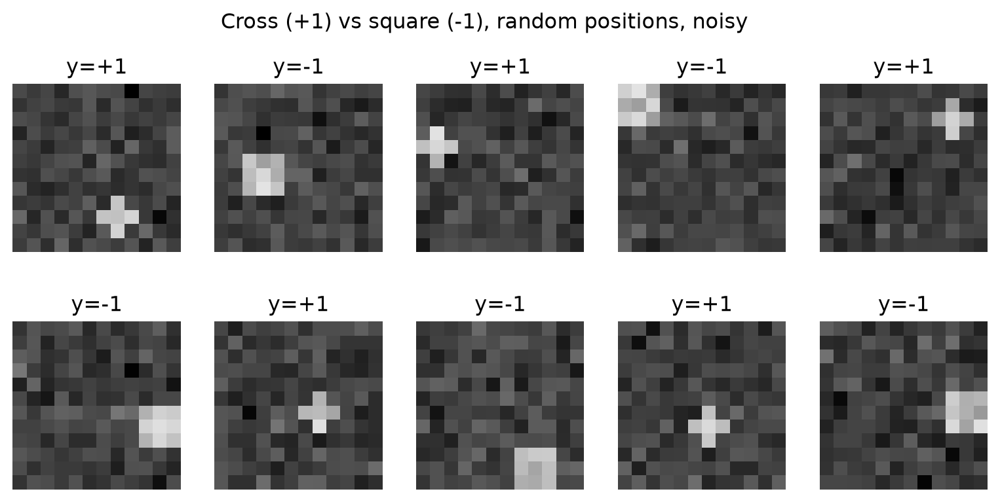
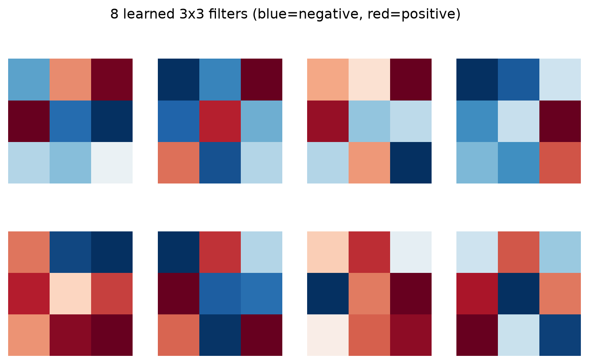

import matplotlib.pyplot as plt
import numpy as np
from dlbook.data import make_shifted_pattern
from dlbook.nn import MLPNumpy, SimpleConvNet
from dlbook.train import Trainer, accuracy
from dlbook.utils import set_seed
set_seed(42)
Xtr, ytr = make_shifted_pattern(n=300, noise=0.15, seed=0)
Xte, yte = make_shifted_pattern(n=400, noise=0.15, seed=1)13 LeNet：1989 年就有的答案
AlexNet 的故事容易让人以为卷积网络诞生于 2012。真相是：当 2012 年的雪崩发生时，卷积网络已经等了二十三年。1980 年 Fukushima 的 Neocognitron (Fukushima 1980) 画出了层级结构的蓝图，1989 年 LeCun 把反向传播装进卷积网络识别邮编，1998 (LeCun et al. 1998) 年的 LeNet-5 已经在被银行用来读取支票上的手写数字。它缺的从来不是正确，是 2.4 章那两块基石：数据与算力。本章我们亲手实现这个”早到的答案”，并用一个实验看清它到底聪明在哪里。
Tip算力需求
A 级：笔记本 CPU · 全部实验合计约 1 分钟。
- 算力：LeCun 1989 年的训练在一台 SUN-3 工作站上跑了约三天；LeNet-5 时代（1998）读取一张支票的数字已经在专用硬件上达到实用速度。它当时是少数真正在生产中赚钱的神经网络；
- 数据：美国邮政的手写邮编（约 7000 张）、后来的 MNIST（1998 年随 LeNet-5 论文发布，6 万张 28×28）。以当年的标准已是”大数据”；
- 认知：视觉研究深受 Hubel 与 Wiesel（1981 年诺奖）影响。视觉皮层就是层级化的局部感受野检测器；Fukushima 的 Neocognitron 是这个思想的第一台机器；
- 关键事实：LeNet 的每一件设计（局部连接、权共享、下采样）都来自”把已知的视觉结构写进架构”。这与 2.4 的 Bitter Lesson 形成全书第一场正面张力：先验知识 vs 通用学习。
13.1 本章问题
上一部分结束时我们留下断言：MLP 用参数硬扛图像的结构，参数爆炸而泛化不增。现在把它变成一个可测量的命题：
一张 12×12 的图里有一个小图案（十字或方块），位置随机。要判断图案类型。
- MLP 需要多少参数？效果如何？
- 把”图案在哪不重要”这个知识写进架构，能省多少参数、涨多少分？
13.2 历史中的尝试（包括弯路）
全连接的视觉（弯路）。把图像展平成向量交给 MLP。1980s 的默认做法。问题不在算力在结构：同一个十字出现在左上或右下，在全连接看来是两个毫无关系的输入向量；网络只能为每个位置分别学习一套”十字检测器”。参数随图像尺寸平方增长，而每个位置的样本被摊薄。
Fukushima 的 Neocognitron（1980）。受视觉皮层启发：S 细胞（简单特征检测）与 C 细胞（位置容忍）交替堆叠，形成层级。它甚至是自组织的（无监督学习）。但是，缺少反向传播这样的全局训练信号，效果受限。思想正确，发动机缺位。
LeCun 的 LeNet（1989–1998）。关键的综合：局部感受野 + 权共享 + 反向传播（1986 年刚发明）+ 下采样。1989 (LeCun et al. 1989) 年的邮编识别论文标题朴素得刺眼。Backpropagation applied to handwritten zip code recognition。这是历史上第一次反向传播训练卷积网络。到 LeNet-5（1998），NCR 公司的支票读取系统读取了全美相当比例的支票。在深度学习的史前黑暗时代，LeNet 一直是活着并且赚钱的证据。只是规模上不去，世界便假装它不重要。
缓一缓。这一节把三条线索拧到 1989 年：Neocognitron 给了层级结构的蓝图，反向传播给了训练信号，LeCun 把两者装进卷积结构去识别邮编。到 1998 年，LeNet-5 已经在银行里读支票——缺的只是数据与算力，不是正确。
任务如上（12×12 图案、随机位置、二分类）。在写任何代码之前，回答三问：
- MLP 的参数账：输入 144 维、隐藏 64，参数多少？其中多少比例在”为每个位置重复学习同一个检测器”？
- 架构设计：如果让你把”位置无关”写进架构，你会怎么连接神经元？（提示：一个检测”局部 3×3 图案”的单元，应该把权重分享给图像的哪些位置？）
- 预测试验结果：同样 200 个训练样本，你设计的方案与 MLP 各能达到多少测试准确率？参数量差多少倍？
写下三个答案再往下读。第 2 问如果你独立想出了”滑动共享权重的局部窗口”，你就重新发明了卷积。
13.3 核心思想
卷积 = 把两种先验写进架构：
- 局部性：每个特征只看输入的一个小窗口（3×3）。图像的像素只与邻居强相关；
- 平移等变性：同一个窗口检测器在整张图上滑动、共享同一组权重。“十字”无论出现在哪里都用同一双眼睛看。
参数账一目了然：一个 3×3 检测器只有 9 个权重（加偏置 10 个），而不是 144×64 的全连接矩阵。知识以架构的形式注入，参数不再为重复的平移副本买单。
数学上，卷积层的前向是 \(Z_{o,i,j} = b_o + \sum_{u,v} W_{o,u,v}\, X_{i+u, j+v}\)。而它的反向传播依然是 1.3 的三条递推，只是 \(W\) 的梯度要按共享位置累加。我们把它实现为 dlbook.nn.Conv2D（im2col 展开成矩阵乘。这也正是 GPU 上真实的做法，2.4 的算子经济学伏笔）。
全局平均池化：把每个滤波器在全图的响应取平均，作为该滤波器的特征。位置信息在这一步被主动丢弃，分类只看”图里有什么”，不看”在哪里”。
归纳偏置（inductive bias）：这个本章正式引入的词，指架构预先注入的结构假设。卷积的归纳偏置（局部 + 平移）恰好匹配图像的统计结构，所以，样本效率高。先验是小数据时代的朋友；而当数据趋于无限，先验的限制性也可能变成天花板（这个张力将在 5.3 注意力的全盛时代总爆发，先按下不表）。
缓一缓。这一节说明了卷积是什么：把「局部性」与「平移共享」两条先验写进架构，参数从 144×64 的全连接矩阵降到 3×3 检测器的 10 个权重；反向传播照旧是那三条递推，只是梯度要按共享位置累加；全局平均池化则主动丢掉位置信息，只看「图里有什么」。
13.4 从零实现
先看数据长什么样：
fig, axes = plt.subplots(2, 5, figsize=(10, 4.5))
for ax, img, label in zip(axes.ravel(), Xtr[:10], ytr[:10]):
ax.imshow(img[0], cmap="gray", vmin=-0.5, vmax=1.5)
ax.set_title(f"y={label:+.0f}")
ax.axis("off")
fig.suptitle("Cross (+1) vs square (-1), random positions, noisy")
plt.show()
选手一：MLP。 展平成 144 维向量，标准配方（relu + 动量 + 缩放初始化）：
mlp = MLPNumpy(144, [64, 1], activation="relu", seed=0)
n_mlp = sum(W.size + b.size for W, b in zip(mlp.Ws, mlp.bs))
h = Trainer(mlp, lr=0.01, momentum=0.9, batch_size=32, seed=0).fit(
Xtr.reshape(len(Xtr), -1), ytr, 40
)
acc_mlp = accuracy(mlp, Xte.reshape(len(Xte), -1), yte)
print(f"MLP: {n_mlp} 参数, test_acc = {acc_mlp:.3f}")MLP: 9345 参数, test_acc = 0.870选手二：卷积 + 全局平均池化（SimpleConvNet，8 个 3×3 滤波器）：
conv = SimpleConvNet((12, 12), out_ch=8, kernel=3, padding=1, hidden=16, seed=0, pool=True)
n_conv = conv.conv.n_params + sum(W.size + b.size for W, b in zip(conv.head.Ws, conv.head.bs))
rng = np.random.default_rng(0)
for ep in range(80):
order = rng.permutation(len(Xtr))
for s in range(0, len(Xtr), 32):
i = order[s : s + 32]
conv.backward(Xtr[i], ytr[i])
conv.step(0.03, momentum=0.9)
acc_conv = float(np.mean((conv.forward(Xte).ravel() > 0) == (yte > 0)))
print(f"Conv+pool: {n_conv} 参数, test_acc = {acc_conv:.3f}")
print(f"\n参数比: {n_mlp} / {n_conv} = {n_mlp / n_conv:.0f} 倍")Conv+pool: 241 参数, test_acc = 0.998
参数比: 9345 / 241 = 39 倍典型读数：MLP 9345 个参数、测试 0.87 左右。训练集能拟合（它有足够的参数为每个位置背一份检测器），测试集上位置一换就露馅；卷积网 241 个参数、测试 1.00。约 39 倍的参数效率差距，外加 13 个百分点的准确率差距。把学到的滤波器画出来：
fig, axes = plt.subplots(2, 4, figsize=(9, 5))
for ax, w in zip(axes.ravel(), conv.conv.W):
ax.imshow(w.reshape(3, 3), cmap="RdBu")
ax.axis("off")
fig.suptitle("8 learned 3x3 filters (blue=negative, red=positive)")
plt.show()
九个格子的小模板。它们自动分化成不同朝向的边缘、角点、亮斑检测器（在真实图像上，这套滤波器会演化出著名的 Gabor 类边缘检测器。3.3 的特征层级正是由此长出）。
缓一缓。这一节跑完了对比实验：MLP 用 9345 个参数拿到 0.87 的测试准确率，卷积网用 241 个参数拿到 1.00——39 倍的参数效率差距，就是「把位置无关写进架构」的价格。学到的 8 个滤波器自发分化成边缘、角点与亮斑检测器。
13.5 消融实验
拆掉池化，位置记忆立刻回来。 全局平均池化是”位置无关”的架构保证；没有它，全连接头照样能背位置：
conv_nopool = SimpleConvNet((12, 12), out_ch=8, kernel=3, padding=1, hidden=16, seed=0, pool=False)
rng = np.random.default_rng(0)
for ep in range(40):
order = rng.permutation(len(Xtr))
for s in range(0, len(Xtr), 32):
i = order[s : s + 32]
conv_nopool.backward(Xtr[i], ytr[i])
conv_nopool.step(0.05, momentum=0.9)
acc_np = float(np.mean((conv_nopool.forward(Xte).ravel() > 0) == (yte > 0)))
print(f"无池化卷积网: test_acc = {acc_np:.3f}")无池化卷积网: test_acc = 0.943loss 降到接近 0、训练准确率 100%，测试却停在 0.94 附近，比池化版的 1.00 低了一截。卷积层提特征、全连接头背位置，先验被架空时丢的就是这一截分。归纳偏置必须在架构里兑现，不能指望数据替你学出来（数据无限时或许可以。那正是 Bitter Lesson 的立场，留待 9.1 裁决）。
缓一缓。这一节拆掉池化来验证先验的作用：卷积层照常提特征，全连接头却把位置背了下来，测试停在 0.94，比满分低了一截。归纳偏置必须在架构里兑现，数据替你学不出来——至少在样本有限时如此。
13.6 本章 Loss 账本
| 问题 | 回答 |
|---|---|
| 在优化什么 loss？ | 与前几章相同的 MSE（历史注：LeNet-5 原文用的也是 MSE，交叉熵配 softmax 是后来的标配）。差别全在假设空间：卷积把搜索限制在”平移等变的函数”里 |
| 数据从哪来？ | 合成的平移图案（噪声版）；历史上是邮编与 MNIST |
| 买到了什么能力？ | 39 倍参数效率；位置泛化的”免费午餐”。这是架构先验买来的，不是数据教的 |
| 没买到什么？ | 旋转/尺度不变性（要靠数据增强或更深的池化层级）；变长输入与长程依赖（→ 3.4）；先验本身可能是天花板（→ 9.1） |
- 权共享思想 → 嵌入的查表共享（4.4 词向量）、注意力的头共享。“参数复用”是深度学习最持久的省钱术；
- im2col 矩阵乘实现 → 今天 GPU/TPU 上卷积的真实编译方式（算子经济学，2.4 伏笔的回收）；
- 归纳偏置一词 → 5.3 卷积 vs Transformer 之争的核心词汇：注意力是几乎无偏置的架构，小数据输给卷积、大数据反杀。Bitter Lesson 的架构版；
- LeNet 的”等待 23 年” → 先验正确 ≠ 时代到来；同样的剧本将降临在注意力（2014 理论、2017 点燃）与许多今天正在等待的idea 上。
LeCun, Y., Boser, B., Denker, J., Henderson, D., Howard, R., Hubbard, W. & Jackel, L. (1989). Backpropagation applied to handwritten zip code recognition. Neural Computation 1(4).
- 读什么：第 2 节架构描述与图 3（权共享的网络图）。注意论文如何用一段文字讲清”局部感受野 + 共享权重”；
- 跳过什么：硬件实现细节；
- 历史注：配套读 Fukushima (1980) 的 Neocognitron（视觉皮层启发的先驱，无监督）与 LeCun et al. (1998) 的 LeNet-5 综述（Proc. IEEE，几乎是现代卷积网络的完整设计文档：卷积、池化、RBF 输出、多任务损失。1998 年的论文读起来像 2015 年的，这种时间错位感正是本章的主题）。
13.7 遗留问题
- 网络加深时卷积网络会遇到什么？（→ 下一章：军备竞赛与残差的诞生）；
- 学到的特征层级到底长什么样？能借给别的任务用吗？（→ 3.3 预训练-微调范式）；
- 图像之外：变长序列、远距离依赖，卷积的窗口够不着怎么办？（→ 3.4 边界）。
缓一缓。一句话复述：卷积网络是 1989 年就有的答案，等了二十三年才等来它的时代。三个遗留问题——加深会遇到什么、特征长什么样、窗口够不着序列怎么办——分别是下一章、3.3 与 3.4 的入口。
13.8 练习
- 造轮子：遮住
Conv2D.backward，只凭”共享权重的梯度按位置累加”重写它，用tests/test_conv.py的有限差分对拍验证。 - 预测再运行：把图案尺寸从 12×12 加到 20×20（位置更多），MLP 与卷积网的参数量和测试准确率各会怎么变？差距扩大还是缩小？先算参数账再运行。
- 消融：把卷积核从 3×3 改成 5×5（padding=2），参数与效果怎么变？在本任务里是大核好还是小核好？为什么？
- 论文映射：用四问账本拆 LeCun 1989。注意第三问（买到的能力）里”支票读取的商用”这一条在账本上的特殊地位。
- 进阶：给
SimpleConvNet加第二个卷积层（8→16 通道），观察滤波器是否出现”组合下层特征”的迹象（特征层级的雏形，3.3 正题）。
Note练习答案
练习 2：MLP 参数 400×64≈2.6 万（约 3 倍），测试准确率进一步下滑（位置组合更多、样本更摊薄）；卷积网参数几乎不变（还是 241），准确率保持。差距随图像尺寸扩大，这正是卷积在大图像时代胜出的算术。
练习 3：5×5 核参数 25/滤波器，本任务里与 3×3 相当或略差。图案只有 3×3，大核的额外感受野只看到噪声。核尺寸应匹配目标结构的尺度（真实图像的多尺度需求催生了 3.2 开头提到的 GoogLeNet 的多核并行）。
练习 5 提示：把第二层滤波器按其对第一层 8 个通道的权重可视化（16×8×3×3），寻找”仅对某几个边缘检测器有强权重”的组合模式。
Fukushima, Kunihiko. 1980. “Neocognitron: A Self-Organizing Neural Network Model for a Mechanism of Pattern Recognition Unaffected by Shift in Position.” Biological Cybernetics 36: 193–202.
He, Kaiming, Xiangyu Zhang, Shaoqing Ren, and Jian Sun. 2015. “Deep Residual Learning for Image Recognition.” arXiv Preprint arXiv:1512.03385.
LeCun, Yann, Bernhard Boser, John S. Denker, et al. 1989. “Backpropagation Applied to Handwritten Zip Code Recognition.” Neural Computation 1 (4): 541–51.
LeCun, Yann, Léon Bottou, Yoshua Bengio, and Patrick Haffner. 1998. “Gradient-Based Learning Applied to Document Recognition.” Proceedings of the IEEE 86 (11): 2278–324.
Rafailov, Rafael, Archit Sharma, Eric Mitchell, Christopher D. Manning, Stefano Ermon, and Chelsea Finn. 2023. “Direct Preference Optimization: Your Language Model Is Secretly a Reward Model.” NeurIPS.